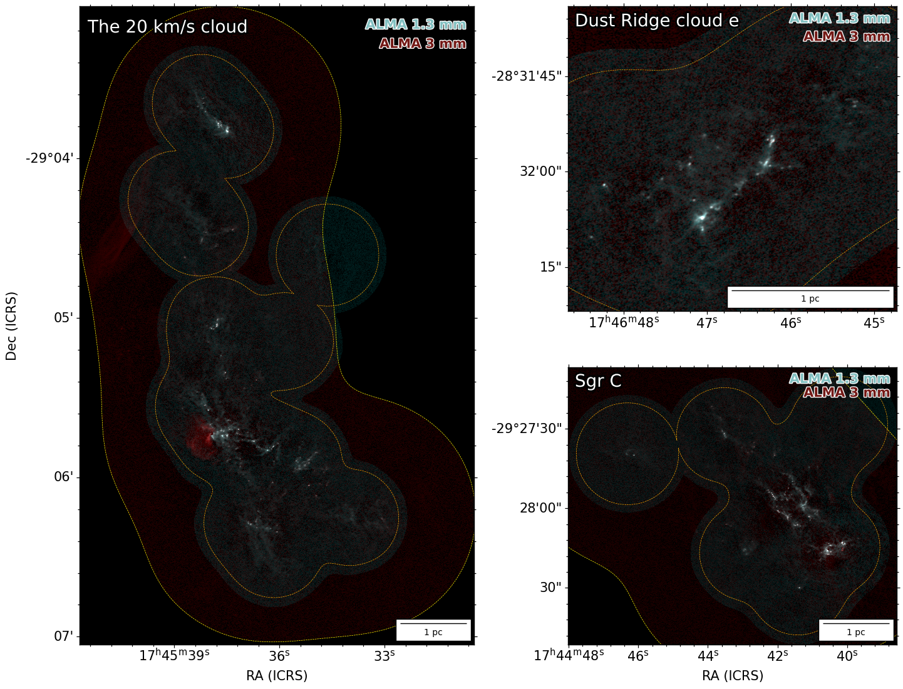
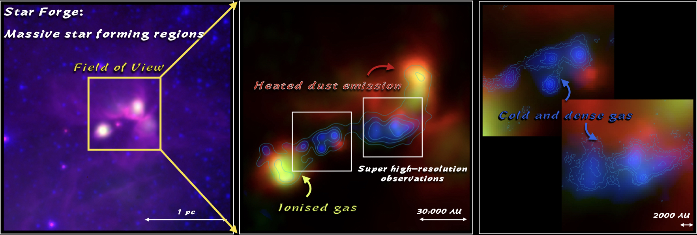
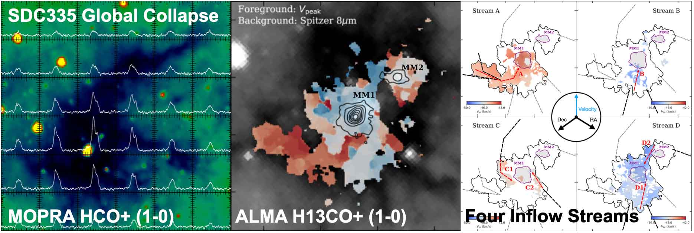
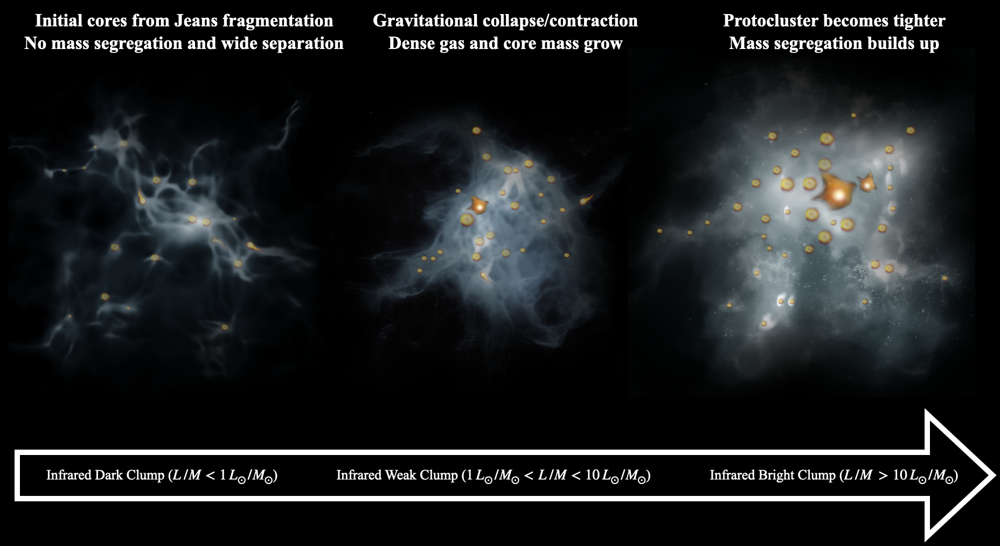
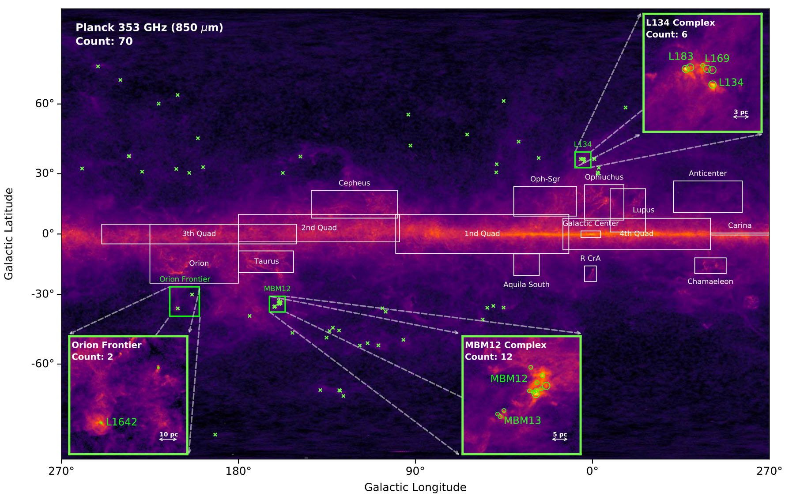
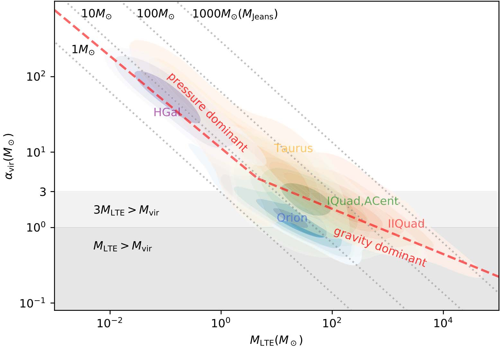

Research
DUET
"Dual-band Unified Exploration of Three CMZ Clouds" (DUET) targets the 20 km/s cloud, Sgr C, and Dust Ridge cloud e using the Atacama Large Millimeter/submillimeter Array (ALMA) at both 1.3 and 3~mm. The mosaicked observations achieve a comparable resolution of 0.2-0.3 arcsec (i.e., 1600-2500 AU) and a sky coverage of 8.3-10.4 square arcmin, respectively.

Click for a closer look on the high-quality ALMA dual-band data.
QUARKS
"Querying UCHII Regions with ALMA-Resoled Kinematics and Structures" (QUARKS) has observed 139 massive star-forming clumps at ALMA 1.3 mm with 0.3 arcsec resolution and up to 20 arcsec maximum recoverable scale. Combined with the 3 mm survey called ATOMS (see intro. below), QUARKS has been unveiling a large sample of massive protostellar clusters, as well as their physical and chemical properties (Liu et al. 2024).
Leveraging the largest recoverable sacle, I used the ACA compact array to make a census of dense gas fragments insides the 139 massive clumps. Using radiation transfer model of H2CO multitransition lines, I calculate the gas temperature and calculate the total dense gas reservior. Using the unprecedented large sample, I found a statistically sigificant increment of dense gas fraction (dense gas fragments mass over massive clump mass) along the evolutionary stages, globally from 1% to 10% (Xu et al. 2024).

QUARKS (combined with ATOMS) unveils the multiphase and multiscale gas and dust emission. The massive star-forming regions are the star forge, producing a great number of stars by making cluster. Our ongoing projects are tracing both cold dense molecular gas which are producing baby stars and the hot ionised gas which are heated by the new born stars. (Press release)
ATOMS
"ALMA Three-millimeter Observations of Massive Star-forming regions" (ATOMS) has observed 146 active star-forming regions with ALMA band 3, aiming to systematically investigate the spatial distribution of various dense gas tracers in a large sample of Galactic massive clumps, to study the roles of stellar feedback in star formation, and to characterize filamentary structures inside massive clumps.
For now, ATOMS collaboration have published more than 18 papers in ATOMS Paper Series (not including those using ATOMS data but not in the series). ATOMS is a very active community to welcome more collaboration and also an ongoing compaign to include more data sets for synergy.
I am the core member of ATOMS project, both in science and data reduction. Using the ATOMS data set, I studied the multiscale gas inflows of a hub-filament systems SDC335, which is famous for its best configuration of hub-filament morphology. With four main gas streams identified by H13CO+ (1-0), we accurately calculate the gas inflow rate along those filaments, which are highly consistent with both large-scale global collapse and protostars' accretion rate (Xu et al. 2023).

Multiscale view of SDC335 hub-filament system. At the large scale, the global blue profiles are taken as the signature of gas collapse ten years ago (Peretto et al. 2013). Ten years after, ALMA's high sensitivity enables us to diagnoise how gas is guided by gravity and form filamentary flows onto the protostars.
ASSEMBLE
"ALMA Survey of Star Formation and Evolution in Massive Protoclusters with Blue Profile" (ASSEMBLE) is a concept which aims to systematically study the mass assembly including fragmentation and accretion as well as their connection to theories in high-mass star forming regions.
In the single-dish telescope era, blue-shifted asymmetric self-absorption profiles are considered as an indicator of gas infall based on hill5 model. Considering the low-transition lines are easily affected by the large-scale gas, we used the HCN (4-3) mapping by the JCMT to trace the gas infall in massive star-forming regions (Xu et al. 2023).
With the high-resolution ALMA observations, the fragments insides these massive clumps are widely found but no statistical studies have shed light on their evolution. Leveraging ALMA's unprecendented sensitivity and survey efficiency, we can now finally unveil the dynamic scenario of massive protocluster formation and evolution (Xu et al. 2024).

Dynamic scenario of massive protocluster formation and evolution in a cartoon fashion.
High latitude interstellar medium and star formation
High latitude molecular clouds of the Milky Way, namely the "underwater iceberg" guards its secrets about molecular gas and star formation, due in part to the limited scope of previous CO surveys, and remains unclear but charming and fascinated (Xu et al. 2024). Our previous work performed a 12CO/13CO/C18O (1-0) survey towards 41 Planck Galactic Cold Clumps (PGCCs) with Purple Mountain Observatory 13.7-m radio telescope. Although detected CO cores have a typical density of 10,000 per cubic centimeter, consistent with nearby cloud cores, the turbulent energy is significantly higher than the gravitational energy, with virial parameter >30 ((Xu et al. 2021)

The Northern sky distribution high-latitude Planck Galactic Cold Clumps (PGCCs). The green crosses are our main targets. Several crowded fields are zoomed in for a closer look (Xu et al. 2024).

Mass of cloud cores (under LTE assumption) versus the virial parameter (the required mass for virial equilibrium over LTE cloud core mass). Seen from the purple contours, the high-latitude clouds are unique with extremely high virial parameters >>1.